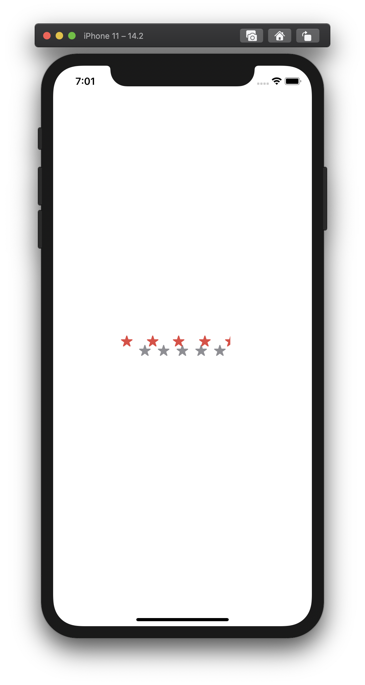

A Precise 5 Star Rating with SwiftUI
Recently, during some slack time at work, I took a look at a mockup we were showing customers during our discovery interviews. The mockup contained a 5 star rating view. You know the one I'm talking about, they're everywhere. Amazon, Airbnb, Walmart… you name it. To get some practice in SwiftUI, I decided I'd create that view component from scratch.
I had a few ideas on how to create the view:
- Give a progress view a custom mask.
- Layout 5 stars and mask over the top of them with a rectangle.
- And finally to use Apple's new SFSymbols to create a simple version using the full star and half star symbols, but that wasn't going to be precise enough to match the mock up.
I decided to go with option two: Masking over 5 stars. Though I quickly realized that it wasn't a simple as masking over the collection of the stars. I had forgotten to account for the space between each star! After some thought, I chose to mask each star individually. This is how it works:
A 5 point scale
Each star needs to represent a portion of the scale. The first star represents 0 to 1, the second 1 to 2 and so on. The simplest solution I could think of was to iterate over an array of stars and create the mask value from rating - index then normalizing it with a floor of 0 and a ceiling of 1.
For example, if the 5 star rating was 3.6, this is what the mask results would look like:
| Star Index | Mask Value | After normailzation |
|---|---|---|
| 0 | 3.6 | 1 |
| 1 | 2.6 | 1 |
| 2 | 1.6 | 1 |
| 3 | 0.6 | 0.6 |
| 4 | 0 | 0 |
After that value is returned, we can use it to mask the star by multiplying the mask ratio by the star's width.
This is what the individual star's code looks like:
struct RatingStar: View {
var rating: CGFloat
var color: Color
var index: Int
var maskRatio: CGFloat {
let mask = rating - CGFloat(index)
switch mask {
case 1...: return 1
case ..<0: return 0
default: return mask
}
}
init(rating: Decimal, color: Color, index: Int) {
// Why decimal? Decoding floats and doubles is not accurate.
self.rating = CGFloat(Double(rating.description) ?? 0)
self.color = color
self.index = index
}
var body: some View {
GeometryReader { star in
Image(systemName: "star.fill")
.foregroundColor(self.color)
.mask(
Rectangle()
.size(
width: star.size.width * self.maskRatio,
height: star.size.height
)
)
}
}
}
Easy right!? Let's lay the code out and see how it looks!
First, I wanted to separate the background stars and the foreground stars to keep things nice and clean. Next, I decided to put the image into its own view so any updates to it will apply to all locations a star image would be used.
public struct FiveStarView: View {
var rating: Decimal
var color: Color
var backgroundColor: Color
public init(
rating: Decimal,
color: Color = .red,
backgroundColor: Color = .gray
) {
self.rating = rating
self.color = color
self.backgroundColor = backgroundColor
}
public var body: some View {
ZStack {
BackgroundStars(backgroundColor)
ForegroundStars(rating: rating, color: color)
}
}
}
private struct StarImage: View {
var body: some View {
Image(systemName: "star.fill")
}
}
private struct BackgroundStars: View {
var color: Color
init(_ color: Color) {
self.color = color
}
var body: some View {
HStack {
ForEach(0..<5) { _ in
StarImage()
}
}.foregroundColor(color)
}
}
private struct ForegroundStars: View {
var rating: Decimal
var color: Color
init(rating: Decimal, color: Color) {
self.rating = rating
self.color = color
}
var body: some View {
HStack {
ForEach(0..<5) { index in
RatingStar(
rating: self.rating,
color: self.color,
index: index
)
}
}
}
}
Crap!
Just a minor detail or two. Let's make sure the images can scale and fit the right aspect ratio:
private struct StarImage: View {
var body: some View {
Image(systemName: "star.fill")
.resizable()
.aspectRatio(contentMode: .fill)
}
}
Voila!
Like magic! This was a fun little project. In comparison to UIKit (SwiftUI's predecessor), it was far less code and dramatically more enjoyable to create. You can checkout the source code on Github.
This article was originally posted on Medium